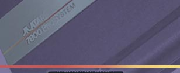
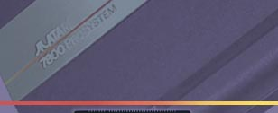

|  |
 |
|  |
|
 |
7800 Games & Development New homebrew developed games were very sparse for the Atari 7800 until the last 2-3 years due in part to efforts by Kenfused and Pacmanplus of Atariage.com It now seems that more programmers are taking an interest in this wonderfully powerful videogaming system and tapping into its potential to create games far surpassing those on the Atari 2600, 5200 and 8bit Atari computers.
Some Helpful Links are below:
Atariage.com 7800 Discussion Forum
Atariage.com 7800 Programmers Forum
To further help in the learning, and programming of the Atari 7800, the following original Source Code to many Atari 7800 video games have been provided below. These games were rescued from Atari ST format diskettes that were thrown out behind 1196 Borregas when Atari closed up in 1996. The Atari Museum rescued these important treasures and recovered them from the diskettes. Many of the compiling and coding tools as well as the Atari 7800 development tools are Atari ST programs, which can be run via emulation to be able to natively compile and test code.
Atari 7800 Source Code
|